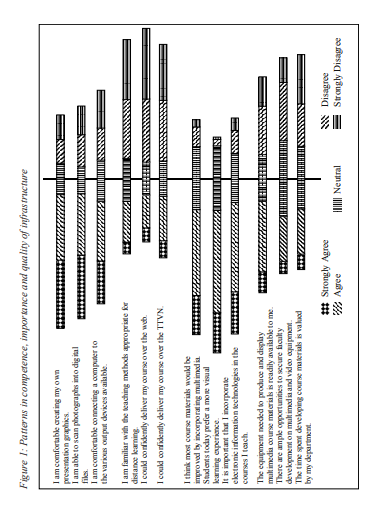

<html>
<head>
    <title>
        <meta charset="utf-8">
        <meta name="viewpoint" content="width-device-width,initial-scale=1.0">
        <link rel="stylesheet" href="style1.css">
    </title>
  </head>
    <body>
        <div>
            <center>
                <h3> Chapter V</h3>
                <h1>Faculty Perceptions and<br> Participation in Distance<br> Education: Pick Fruit From<br>
                    The Low-Hanging Branches</h1>
                <h6>Kim E. Dooley and Jane Magill<br>
                    Texas A&M University, USA</h6>
            </center>
    <p style= "text-align: justify;">
        <em>The environment for higher education has become much more dynamic and even more complex with the recent development of new
            digital technologies</em> (Hanna, 1999, p. 25).</p>
        <p>&nbsp;&nbsp;&nbsp;&nbsp;&nbsp;&nbsp;Motivating faculty members to teach at a distance has been a challenge for most colleges and universities. What will be the impact of teaching using
technology on faculty responsibility? Is teaching students through any or all
distance education methods really nothing more than adapting traditional
classroom approaches? What are the attitudes and barriers to using technologies often associated with distance education? In this chapter the authors
present data obtained from an extensive survey of faculty opinions on
teaching at a distance, as well as several case studies describing incentives and
training made available for distance education. To enhance participation in
distance education, faculty must have the competence, attitude that distance
education is important and valuable, and infrastructure available to facilitate
the additional time and effort to convert courses. Faculty training programs
cannot be “one-shot” and should include personnel in close proximity to
faculty, preferable on their own equipment. Release time is an important
incentive to encourage participation.</p>
            <center><h2>INTRODUCTION</h2></center>
            <p>&nbsp;&nbsp;&nbsp;&nbsp;In 1989, Connie Dillon addressed the perceptions of faculty participation in
instructional telecommunications. Her study provided insight into the factors that
influence the integration of telecommunications teaching within the higher
education system. A decade has passed and many higher education institutions are
still struggling to integrate and utilize distance education technologies. The
technologies have changed, but faculty attitudes often remain the same.</p> 
        <p>&nbsp;&nbsp;&nbsp;&nbsp;To prepare students successfully for today’s digital marketplace, educators should incorporate the use of information technologies. “Educators must
help all students become adept at distanced interaction, for skills of information gathering from remote sources and of collaboration with dispersed team
members are as central to the future American workplace as learning to
perform structured tasks quickly was to the industrial revolution” (Dede,
1996, p. 30). Students learn from competent instructors who have been trained
how to communicate effectively through the technology. Thomas Cyrs (1997)
identifies areas of competence important to a distance education environment: course planning and organization, verbal and nonverbal presentation
skills, collaborative teamwork, questioning strategies, subject matter expertise, involving students and coordinating their activities at field sites, knowledge of basic learning theory, knowledge of the distance learning field, design
of study guides, graphic design and visual thinking (Cyrs, 1997). LacinaGifford and J.-Kher-Durlabhji (1996) emphasized that instructors must be
part of a change process in their role as instructors if distance learning is to be
successful. The authors also mentioned that the students attributed the success
of the program to user-friendly technology and the promptness of the
instructor in communicating with the students.</p> 
        <p>&nbsp;&nbsp;&nbsp;&nbsp;Linda Wolcott (1997) conducted an analysis of the institutional context
and dynamics of faculty rewards at research universities. She discovered that
1) distance education occupies a marginal status, 2) distance teaching is
neither highly valued nor well-rewarded as a scholarly activity, 3) distance
teaching is not highly related to promotion and tenure decisions, and 4)
rewards for distance teaching are dependent on the academic unit’s commitment to distance education. Faculty barriers stem for the lack of perceived
institutional support (faculty rewards, incentives, training, etc.) for course
conversion to distance education formats (Dillon & Walsh, 1992; McKenzie,
Mims, Bennett, & Waugh, 2000; Wolcott, 1997; Olcott & Wright, 1995). Part
of this support may include release time for course preparation. Reports
indicate that teaching at a distance takes more time than teaching a traditional
course (NEA, 2000; McKenzie, Mims, Bennett, & Waugh, 2000; Rockwell,
Schauer, Fritz, & Marx, 1999; Visser, 2000).
</p> 
        <p>&nbsp;&nbsp;&nbsp;&nbsp;The need for a change and modification of the faculty role in teaching at
a distance has been recognized (Dillon & Walsh, 1992; Layzell, 1996; Plater,
1995; Purdy & Wright, 1992; Schifter, 2000). “It is not that the technology
underpinning distance education drives the system but rather that fundamental changes in teaching style, technique, and motivation must take place to
make the new ‘classrooms’ of the present and future function effectively”
(Purdy & Wright, 1992, p. 4).</p> 
        <p>&nbsp;&nbsp;&nbsp;&nbsp;Despite the fact that much of the literature in distance education discusses the
importance of faculty, this group has been largely neglected by the research
(Dillon & Walsh, 1992; Beaudoin, 1990). Beaudoin (1990) observes that: 
        <br>&nbsp;&nbsp;&nbsp;&nbsp;[t]he emergence of increasingly student-centered learning activities
<br>&nbsp;&nbsp;&nbsp;&nbsp;in the 1970s facilitated by new instructional technology introduced
<br>&nbsp;&nbsp;&nbsp;&nbsp;in the 1980s is contributing to a dramatic evolution in faculty roles,
<br>&nbsp;&nbsp;&nbsp;&nbsp;and raises fundamental questions within the professoriate about how
<br>&nbsp;&nbsp;&nbsp;&nbsp;it will contribute to the teaching-learning process in the 1990s and beyond.(p. 21)</p>
           <p>&nbsp;&nbsp;&nbsp;&nbsp;As indicated by Moore (1997) in his comparison of distance education,
programs with a commitment to faculty support and training result in higher
quality. Institutions that are involved in, or currently moving into the realm of
distance education can benefit from the discussions in this chapter. As the
complexity continues and the desire to integrate distance education programs
               expands, attention must be given to faculty training and support.</p>
            <p>&nbsp;&nbsp;&nbsp;&nbsp;In consideration of this incredible growth and increased complexity, what
will be the impact of teaching using technology on faculty responsibility? Is
teaching students through any or all distance education methods really nothing
more than adapting traditional classroom approaches? What are the attitudes and
barriers to using technologies often associated with distance education?</p>
            <p>&nbsp;&nbsp;&nbsp;&nbsp;This chapter is divided into two major sections. The first provides a
glimpse of faculty perceptions about teaching at a distance based upon several
research studies conducted at Texas A&M University. The second section
will provide case studies of actual faculty training, support, and incentives
that were implemented to encourage faculty to participate in teaching at a
distance—some that worked and some that didn’t.</p>
            <center><h2>FACULTY PERCEPTIONS OF TEACHING AT A <br>DISTANCE</h2></center>
            <p>&nbsp;&nbsp;&nbsp;&nbsp;The changing student population, rapid technological advances, and the
economic issues facing higher education are creating an accelerated demand
for learning anytime, anyplace. The ability of an organization to adapt to
these changes will be influenced by at least three factors: a) the knowledge, skills, and abilities of its faculty/staff, b) the amount of importance
placed on distance learning technologies to accomplish teaching and
learning, and c) the availability of high-quality facilities, equipment,
technical support, and training.</p>
            <p>&nbsp;&nbsp;&nbsp;&nbsp;At Texas A&M University, distance education began in the early 1990s
with the development of the Trans-Texas Videoconference Network (TTVN).
There are now over 100 interactive video sites across the state and in two
international locations (Mexico City, Mexico and San Jose, Costa Rica). The
network initially was a means to connect all the components of the Texas
A&M University System administratively. By the mid 1990s, faculty who had
been teaching in off-campus programs began teaching courses on the network
and today there are six Masters degrees and one Joint Doctor of Education
degree offered entirely at a distance. Additionally, the university adopted
WebCT in 1998 and faculty began to include more web-based components in
their courses and degree programs.</p>
            <p>&nbsp;&nbsp;&nbsp;&nbsp;In the College of Agriculture and Life Science, there is currently a Master
of Agriculture Degree with three content options (Natural Resource Development, Interdisciplinary Science, and Agricultural Development) and the Joint
Doctor of Education in Agricultural Education degree offered with Texas
Tech University. Recent studies were conducted to provide baseline data for
faculty perceptions of electronic technologies used in teaching and to determine the rate of adoption of distance education as an innovation (Dooley &
Murphy, 2001; Dooley & Murphrey, 2000; Murphrey & Dooley, 2000; Poe,
2000). The studies include both quantitative and qualitative data collection
procedures and analysis, and provide the basis for recommendations to
encourage faculty participation in distance education.</p>
            <p>&nbsp;&nbsp;&nbsp;&nbsp;In the Dooley and Murphy study (2001), all teaching faculty in the
College of Agriculture and Life Science (15 departments) were surveyed
(N=315). The instrument used to collect data was a three-part questionnaire
designed by the researchers. Part I of the questionnaire was designed to
identify the characteristics and level of involvement of the respondents in
technology-mediated instruction. Part II was designed to measure faculty
competence, value and quality of infrastructure with a five-point Likert
response scale. Part III consisted of three open-ended questions designed to
provide an opportunity for the respondents to add their comments concerning
the improvement of their use of distance education technologies.</p>
            <p>&nbsp;&nbsp;&nbsp;&nbsp;In all, 263 survey instruments were returned for a final response rate of
84%. Survey and follow-up procedures were in accordance with those
outlined by Dillman (1978). Descriptive statistics were calculated for
each variable. Frequencies and percentages were used to summarize
agreement or disagreement with each of the statements related to competence, value, and quality of infrastructure. An attempt to control nonrespondent error was made by comparing the data from early and late
respondents as suggested by Miller and Smith (1983). No significant
differences were found between the groups.</p>
            <p>&nbsp;&nbsp;&nbsp;&nbsp;The constant comparative method was used for the open-ended,
qualitative data analysis (Lincoln & Guba, 1985). Colored markers were
used to differentiate respondent themes so that the data would remain in
context and provide visual indications of emerging categories. Delimiting
the construction occurred as the data sources became saturated and the
categories were integrated.</p>
            <p>&nbsp;&nbsp;&nbsp;&nbsp;In this study, over one-half the faculty members reported having a
website related to their course. Of these, 84% were described as simply
enhancing the course, 15% were described as a required component of the
course, and .7% (1 course) was described as being completely delivered via
the website.</p>
            <p>&nbsp;&nbsp;&nbsp;&nbsp;Almost exactly half the faculty with a course website administer that site
themselves. Less than one-quarter assign a graduate assistant to the task.
Almost as many (21%) use professional support staff. Most of these course
websites reside administratively near the faculty members on their departmental servers (62%), and on university servers (21%). Faculty members
were almost evenly split on the software used to edit these websites, with 32%
using a text editor, and 28% using Microsoft Word. Only 5% use Microsoft
FrontPage, while 23% report using “other” software.</p>
            <p>&nbsp;&nbsp;&nbsp;&nbsp;While many of the teaching faculty had websites, few had experience
teaching learners at a distance. Only 1% had taught a course at a distance more
than ten times. Another 10% had taught at a distance between two and ten
times, while 9% had taught at a distance once. Almost 80% of the faculty
members responding to the survey indicated that they had never taught a class
to learners at a distance.</p>
            <p>&nbsp;&nbsp;&nbsp;&nbsp;Eleven items on the questionnaire were used to measure the perceived
level of competence that respondents possessed in the use of electronic
technologies often associated with distance education. The faculty indicated
that they were able to use many of these technologies. Almost two-thirds of
the faculty indicated they agreed or strongly agreed that they could create their
own presentation graphics, while less than a quarter disagreed or strongly
disagreed. A clear majority of the faculty members (84%) agreed or strongly
agreed that they used email for “almost all of my correspondence,” while 29%
agreed or strongly agreed that they would send their “most important or
confidential” documents through email.” A majority of the faculty members
(59%) agreed or strongly agreed that they could “scan photographs into digital
files,” while 29% disagreed or strongly disagreed. Nearly one-half agreed or
strongly agreed that they were able to “connect a computer to the various
output devices available (LCD projector, TV, etc.).” By a narrow margin, the
faculty members agreed that they could “manipulate digital images” (46%
agreed or strongly agreed vs. 43% disagreed or strongly disagreed). Slightly
over one-half agreed or strongly agreed that they could “confidently deliver
my course over the videoconferencing equipment.”</p>
            <p>&nbsp;&nbsp;&nbsp;&nbsp;While many of the faculty members were fairly confident in their ability
to use presentation software, email, and digital images in their teaching, they
also identified areas in which they were not as confident. Over one-half of the
faculty members disagreed or strongly disagreed that they could create their
own web page. Only a handful agreed (7%) or strongly agreed (3%) with the
statement, “I am able to record and use digital sound in my presentations.”
Nearly two-thirds disagreed or strongly disagreed with the statement, “I could
confidently deliver my course on the web.”</p>
            <p>&nbsp;&nbsp;&nbsp;&nbsp;Faculty members had much more confidence in their technical competence than they did in their methodological ability to use these technologies
in their teaching. Over one-half of the respondents disagreed or strongly
disagreed with the statement, “I am familiar with the teaching methods
appropriate for distance learning.”</p>
            <p>&nbsp;&nbsp;&nbsp;&nbsp;Nine items were used to measure value, i.e., the importance of the role
respondents believed these technologies have or will have to teaching
agriculture. An overwhelming majority of the faculty members strongly
agreed and agreed with the statement, “The Internet/WWW are convenient
ways to access information.” Nearly half agreed or strongly agreed with the
statement, “Participation in listservs, threaded discussion groups, chats and
other electronic communications offers great benefits.” The respondents
agreed (40%) and strongly agreed (18%) that most course materials could be
improved by incorporating multimedia. They agreed (40%) and strongly
agreed (18%) that “Animated graphics increase student interest and retention.” Almost exactly two-thirds of the respondents agreed or strongly agreed
that “Students today prefer a more visual learning experience.” Over threequarters of those responding agreed or strongly agreed that “Electronic
information technologies provide students with instantly available supplemental course and research materials.” Over one-half agreed or strongly
agreed that “It is important that I incorporate electronic information technologies in the courses I teach.”
</p>
            <p>&nbsp;&nbsp;&nbsp;&nbsp;Faculty opinions were mixed concerning the effect of these technologies.
While they clearly agreed (38%) or strongly agreed (32%) with the statement,
“Electronic communications and information drastically alter how we teach
in the next five years,” they did not support the statement, “Electronic
communications and information will drastically alter what we teach in the
next five years” (46% disagreed or strongly disagreed).</p>
            <p>&nbsp;&nbsp;&nbsp;&nbsp;Ten items were used to measure the perceived availability of equipment,
facilities, and training to determine the extent to which the campus environment supported the use of technologically mediated instruction on- and offcampus. Concerning the availability of equipment, 92% of the teaching
faculty members indicated they were connected to electronic mail in their
office and 72% indicated they were connected at home. More than one-third
agreed or strongly agreed that “The equipment needed to produce and display
multimedia course materials is readily available to me.” More than one-half
agreed or strongly agreed that they were aware of “the necessary procedure to
secure electronic presentation equipment for classroom use within the university.” Over half of the faculty members agreed or strongly agreed that that they
“have access to a classroom designed to support the use of multimedia
teaching aids.”</p>
            <p>&nbsp;&nbsp;&nbsp;&nbsp;Teaching faculty members perceived training and assistance in the use of
instructional technologies to be less available than equipment. More than one-third disagreed or strongly disagreed that “there are ample opportunities to
secure faculty development on using multimedia and videoconferencing
equipment” while 27% agreed or strongly agreed. While 44% indicated they
were neutral on the question, 11% strongly disagreed with the statement,
“There are enough faculty development workshops regarding
videoconferencing” while 7% strongly agreed. Over half the faculty members
disagreed or strongly disagreed that they were “aware of the procedure, office,
and personnel responsible for scheduling videoconference classes/sessions
for the college.”</p>
            <p>&nbsp;&nbsp;&nbsp;&nbsp;The respondents did not believe that the climate was supportive of the use
of these technologies. Almost one-half of the respondents (43%) disagreed or
strongly disagreed that “The time spent developing course materials is valued
by my department.”</p>
            <p>&nbsp;&nbsp;&nbsp;&nbsp;In general, faculty agreed that electronic technologies could make a
valuable contribution to the learning process, that they should be used in all
classes, and that technology will change how we teach in the next five years.
About one-half of the respondents reported having a course website, but most
lacked experience in teaching learners at a distance, and were much more
confident in their technical competence than in their methodological ability
to use modern technologies. All respondents perceived training and assistance in the use of instructional technologies to be less available than
equipment and facilities. For a view of patterns for competence, value, and
quality of infrastructure, see Figure 1.</p>
            <p>&nbsp;&nbsp;&nbsp;&nbsp;Dooley and Murphy (2001) discovered through the open-ended responses that faculty were currently using distance education technology in the
following ways: 1) web-based tracking simulations, 2) PowerPoint presentations for in-class, videoconferences, and web-based courses, 3) other multimedia, such as animation, 4) course webpages with features such as an ability
to check grades, download lecture outlines, class notes, handouts, course
assignments, and course syllabi, and 5) email and threaded discussion for
increased communications and interaction between faculty and students.
Virtual library resources and the capability to conduct research online were
providing access to dispersed students and faculty. Faculty also mentioned the
use of interactive video for guest speakers, including international connections, and for final defenses</p>
            <p>&nbsp;&nbsp;&nbsp;&nbsp;When faculty were asked, “What would significantly improve your use
of the electronic technologies often associated with distance education?”
Answers fell into six categories: 1) <em>Support Resources</em> (technical and course
conversion personnel, including funding student workers/graduate students,
<em>2)Faculty Rewards/Recognition</em>(release time/faculty development to learn
to use technologies, recognition for tenure and promotion, etc., 3)<em>Training</em> (to
improve comfort and familiarity with equipment), 4)<em> Access to State-of-the-Art Equipment</em>, 5)<em>Quality Assurance</em>(through research, success at other peer
institutions, and continuity in format and procedures), and 6)<em>Availability of an Audience Base</em> (to sustain and make the effort worthwhile).</p>
            <p>&nbsp;&nbsp;&nbsp;&nbsp;Many faculty perceive a lack of “Real SUPPORT from the department
and university, including recognition that its development in my program is
as important and valued as developments in my research. This recognition
would need to be accompanied by time for necessary TRAINING and the
ready access to equipment (respondent emphasis).” Additional time was most
frequently mentioned as a factor to improve use. “Having enough time to
develop the materials needed, and to practice developing and using the
materials. One-shot training programs….leave me frustrated….” Overall,
there is a perception that these six areas must be addressed prior to faculty
adoption of distance education technologies.</p>
            <p>&nbsp;&nbsp;&nbsp;&nbsp;Dooley and Murphy (2001) also asked faculty, “What components
should be present in an effective course delivered using electronic technologies?” There were five primary response categories:1)<em> Interactions/Feedback,</em> 2) <em>Systematic Instructional Design,</em> 3)<em> Multimedia Components,</em> 4) <em>Simple and Reliable Delivery System</em> (that is supported and easily accessible),</p>
            
<p>and 5) <em>Strong Content/Supplemental Materials</em>. Faculty again mentioned the
importance of time and money to create and fully utilize computer technology.
There was a strong view that the components of effective instruction for
distance learning are the same as “traditional” courses. Most emphasized the
importance of interaction (mentioned 60 times). “The professor must be able
to ‘connect’ with each and every student during the lecture and students must
have unhindered access to the professor.”</p>
            <p>&nbsp;&nbsp;&nbsp;&nbsp;Faculty perceived that “technology is a tool similar to a chalkboard or
overhead—all tools have advantages and disadvantages over all other tools
available. There is no ‘perfect’ teaching philosophy or tool, only varying
degrees of effectiveness with various audiences.” “Development of high
quality courses for distance education requires significant investments of time and resources.”</p>
<center><h2>WHAT SHOULD (CAN) BE DONE TO ENHANCE<br>
FACULTY PARTICIPATION</h2></center>
            <p>&nbsp;&nbsp;&nbsp;&nbsp;Faculty recognize that these technologies are—and will be—an
important part of the instructional process. Faculty members also perceive
that support and training are less available than equipment. Resources
must be directed to the provision of adequate levels of support and training
such that electronic technologies are used for the benefit of students, and
not as doorstops.</p>
            <p>&nbsp;&nbsp;&nbsp;&nbsp;While faculty recognize the potential, intervention strategies are necessary to alter how people perceive and react to distance education technologies.
It is apparent that steps must be taken to increase faculty training and support.
Three major areas require consideration: 1) support, 2) training, and 3)
incentives. Support extends beyond “verbal” to providing the support/professional staff to assist faculty. Training should not only include technology
exposure, but instructional design, pedagogy/andragogy, and “cookbook”
strategies and “how-to” manuals. By providing incentives such as release
time, mini-grants, continuing education stipends, and recognition in the
promotion and tenure process, faculty will have more than “verbal” encouragement to continue, or begin, using distance education technologies and will
have the reason to do so (Murphrey & Dooley, 2000).</p>
            <p>&nbsp;&nbsp;&nbsp;&nbsp;If you think of an analogy of a fruit tree, faculty must be encouraged to
pick the low-hanging fruit first. It may be the case that faculty members simply
want to put their syllabi in a word processing document, save it as an Adobe Acrobat (PDF) file and post it on a homepage. Eating that “apple” may
initially fill them up! They may want another piece of fruit (like email or the
ability to put students’ grades on the website), but the training required for
each application is relatively simple compared with a complete conversion to
distance education format (trying to pick from the top of the tree). Both of the
authors of this chapter teach courses at a distance and provide assistance to
other faculty teaching at a distance through the Office of Distance Education
for the Agriculture Program. In the following sections the authors will
describe actual scenarios (successes and failures) intended to support, train,
and provide incentives for faculty teaching at a distance.</p>
            <h3>Workshops and Training</h3>
            <p>&nbsp;&nbsp;&nbsp;&nbsp;<em>Case One</em>: A faculty member who uses the Mac OS went to a workshop
for PowerPoint. She had used the very basic features of PowerPoint and
wanted to learn more. In the workshop, the participants used relatively old
PCs (no MACs) with Windows and the newest version of PowerPoint that
was unfamiliar to this faculty member. When she returned to her Power Mac
8500 computer with PowerPoint 3.0, the differences between the computers
and the versions of PowerPoint were so great that when she tried to duplicate
what she had been taught in the workshop, she could not. The menus were
different; many of the commands were different; the whole face of the
program had changed it seemed. The differences were so great she became
frustrated and gave up.</p>
            <p>&nbsp;&nbsp;&nbsp;&nbsp;A major problem in conducting workshops for faculty members is
getting them out of their offices and to the training site! An equally
difficult problem lies in using computers that are unfamiliar and software
versions different from what the faculty member has on his/her own
computer. To address the problem of faculty reluctance to leave their
offices to learn new computer skills, the Office of Distance Education for
the Agriculture Program (ODE-AG) started a program whereby any
teaching faculty members who wanted to learn PowerPoint could request
that someone come to their offices and teach them on their own computer.
One requirement of each faculty member was that they have a legal copy
of the software. Initially, two undergraduates were hired who were very
knowledgeable about PowerPoint and comfortable with teaching faculty.
In following years, ODE-AG recruited talented undergraduates, who were
trained by the Coordinator of Distance Education. This program has
worked quite well. In a follow-up questionnaire, most of the faculty
members who learned in this way used PowerPoint in their teaching and
some have gone on to teach at a distance.
</p>
            <p>&nbsp;&nbsp;&nbsp;&nbsp;Even though there are some problems inherent in using workshops to
provide training for faculty, there are also many potential benefits, including
improving the technical (and sometimes, instructional) competence of faculty. But, the survey of teaching faculty in our college (Dooley & Murphy,
2001) indicated that many faculty have the competence, but lack the <em>desire</em>
(and time) to make this a priority. Training programs should include research
about how the use of technology impacts the teaching and learning process,
rather than “this is how you do this.” Additionally, faculty may respond to
training programs designed in “small chunks” rather than a half-day program.
To teach faculty to use WebCT for example, Texas A&M University provided
three consecutive days of half-day workshops. Very few faculty could commit
to this training format. The trainers altered the workshop format which is now
“tool” specific and in a one to two hour format. Faculty participation in these
workshops has increased.</p>
    <h3>Why Faculty Choose to Participate</h3>
            <p>&nbsp;&nbsp;&nbsp;&nbsp;<em>Case 2</em>: Professor A teaches a popular course in environmental
sciences at the sophomore level. In fall of 1996, she was concerned that
the course was filled and more than 20 students remained on the waiting
list. Since she had participated in delivering a web-based course the
preceding semester, she decided to add a new section to the environmental
science course, one that would be web-based. She had already developed
a website for her courses and had put all course materials on the web for
her residential students anyway, so there was relatively little extra work
to do for the added web section. The students were required to have an
email address and to interact with the instructor weekly by answering
content-related questions or finding relevant websites. At the end of the
semester, the grades for the students in the web-assisted section, 30 in all,
were slightly higher (on the same exams) than the students in the traditional section, approximately 100. However, the evaluations from the
web-assisted section rated all aspects of the course higher than the overall
evaluations of students in the traditional section</p>
    <p>&nbsp;&nbsp;&nbsp;&nbsp;<em>Case 3</em>: Professor L teaches a required senior level course for nutrition
majors. He converted his course materials to electronic format and put them
onto the web so students could come to class or not as they chose. At the
beginning of the semester one student, a graduating senior called and tearfully
told this instructor that she had just come out of surgery and must return home
to Dallas to convalesce for four weeks, making it impossible to take this
required course. She was scheduled to graduate at the end of the semester and
thought she would have to come back for one more semester. Professor L
suggested that she take the course from her bed in Dallas, which she did. She
was well enough to take exams to pass the course and graduate on time.</p>
            <p>&nbsp;&nbsp;&nbsp;&nbsp;<em>Case 4</em>: Professor B teaches an ecology course at the graduate level.
He is a well-known researcher in his area and frequently is invited to give
lectures, seminars and symposia at other universities in the United States
and abroad. He was offered the opportunity to spend four weeks participating in a research project at a university in Australia during the fall
semester of 1999 but that meant he could not teach his graduate course.
His department head urged him to teach his course on the web and use
mostly email to communicate with the students during the time he was
away. He had never taught a web-based course, but he had already put
most of his course materials on the web for the benefit of his residential
students. With the promise of some additional support from his department head, he accepted the opportunity in Australia and successfully
taught part of his course from there. This support consisted mostly of
partial funding for a web-savvy graduate student in the same area of
expertise to develop a better website, convert a few remaining course
materials to electronic format and to transfer those additional files.</p>
            <p>&nbsp;&nbsp;&nbsp;&nbsp;<em>Case 5</em>: Professor M saw how his colleague had used interactive
practice tests and simple animations accessed on the web to help students
understand some difficult concepts in biochemistry. He worked with the
same educational technologist to develop interactive practice tests for his
residential genetics course and put them on the web. The students really
appreciated the interactive exercises and animations that were available at
all times on the web. Professor M then converted all his course materials
to the web and has developed more practice tests. Last semester, he
decreased the number of lecture periods in his residential course from
three to one per week and added several assignments on the web. The
students were uniformly enthusiastic about the decreased lecture time and
the average grade appeared the same as previous semesters. After Professor M saw how effectively the technology could be used in teaching the course, he plans to try teaching the course completely web-based in summer of 2001.</p>
            <p>&nbsp;&nbsp;&nbsp;&nbsp;Most of the College of Agriculture and Life Science faculty who teach at
a distance began as a direct result of using a few tools of distance education
to solve existing residential problems. Some of the problems include a lack
of space in residential courses, students with an illness or permanent disability
unable to access a residential course, students unable to fit a required course
into their lecture schedules, and the need for instructor flexibility with travel
and research programs. Once courses and course sequences were available via distance education technology, geographically dispersed students needing
access to a degree program were able to participate. Using distance education
effectively adds “new bricks and mortar” to expand the school’s capacity, and
for some students, shorten their time (and monetary investment) in school.
The faculty chose to participate in distance education for <em>intrinsic</em> reasons—
providing access to their students.</p>
            <h3>Use of Support and Training as Faculty Incentives to Teach <br>at a Distance</h3>
            <p>&nbsp;&nbsp;&nbsp;&nbsp;<em>Case 6</em>: An excellent teacher in the College of Liberal Arts was offered
several thousand dollars and a lap-top computer to deliver his course at a
distance to teachers pursuing their Masters degrees. The faculty member who
received the incentives had no experience in teaching at a distance. Although
he had some help, the use of the videoconferencing equipment was frustrating
for him. Since he had no prior experience adapting course materials for a
website (or by any other distance methods), delivering some of the information to the distant students proved to be challenging and time-consuming. He
was not given any release time from his other courses nor from his research
commitments, and therefore he could not spend the extra time needed to
master the technology. Unfortunately, this excellent teacher had a frustrating
experience that left the students frustrated as well. This award-winning
faculty member has not taught another course at a distance.</p>
            <p>&nbsp;&nbsp;&nbsp;&nbsp;<em>Case 7</em>: Professor Q teaches a course in education that many teachers
would like to take. He was offered the use of a full-time graduate student
to help him prepare his course for the web, providing he agreed to teach
the web-based version within the next six months. Unfortunately, Professor Q was not given any release time and taught two other courses during
the semester he had the use of the graduate student. He could not find
enough time to convert the course to a web-based version and has yet to
teach the course on the web.</p>
            <p>&nbsp;&nbsp;&nbsp;&nbsp;Several faculty and administrators have suggested that more faculty
would teach at a distance if given significant incentives beyond adequate
support and training. In the authors’ opinion, the use of specific incentives
has not been effective in convincing resistant faculty members at our
institution to embrace distance education. This comment is not meant to
discount the importance of release time and a belief that this is time well
spent as previously mentioned in the section above. Many universities
have been successful with monetary incentives to encourage participation. It takes a considerable investment of time to teach at a distance and
it must be compatible with existing reward structures. This can be a problem in building a sustainable, critical mass of faculty to participate in
distance education.</p>
            <p>&nbsp;&nbsp;&nbsp;&nbsp;Depending on the institution, the <em>extrinsic</em> motivations will vary. The
authors have found that an effective way to assist faculty in course conversion
is to hire undergraduates as student workers who will work directly with
the faculty member. Hiring a student who has taken the course being
converted has many advantages to the faculty member. First and perhaps
most important, the individual responsible for conversion has some
knowledge of the content area. Secondly, many undergraduates are much
more familiar with computer programs required for course conversion
than faculty. Thirdly, cost of undergraduate student labor is quite low. In
fact, at most institutions undergraduates earn minimum wage for most
jobs. Thus, an undergraduate working ten hours per week for one semester
would cost the university approximately $800. Most undergraduates
benefit greatly from this employment because they generally earn an
outstanding letter of recommendation from the professor. Students can
also register for independent study options, thus making this affordable
and a learning experience for the student and faculty member. Contrast
this with assigning a graduate student on an assistantship to the task of
converting course materials. Graduate assistantships typically pay approximately $5000 or more per semester. Hiring a technical person to
convert course materials is even more costly.</p>
            <center><h2>SUMMARY</h2></center>
            <p>&nbsp;&nbsp;&nbsp;&nbsp;Texas A&M University (and specifically the College of Agriculture and
Life Science) has been the authors’ test bed. But through the search of the
literature and providing training and consulting services at other higher
education institutions, the authors believe that implications from our research
and case studies can provide “lessons learned” for other universities striving
to encourage faculty participation. Rockwell and associates (1999) also found
that the primary incentives for faculty were <em>intrinsic</em> or personal rewards,
including the opportunity to provide innovative instruction and apply new
teaching techniques. Other incentives included extending educational opportunities beyond the traditional institutional walls, and release time for faculty
preparation. That study also determined that the major obstacles were related
to time requirements, developing effective technology skills, and assistance
and support needs. Monetary awards for faculty were not seen as incentives
or obstacles (Rockwall et. al., 1999). McKenzie and her research team (2000)
also found similar conclusions.</p>
            <p>&nbsp;&nbsp;&nbsp;&nbsp;&nbsp;&nbsp;According to Olcott and Wright (1995),<br>&nbsp;&nbsp;&nbsp;&nbsp;
<em>The accelerated development of distance education programs across<br>&nbsp;&nbsp;&nbsp;&nbsp;
American higher education will require a renewed commitment to<br>&nbsp;&nbsp;&nbsp;&nbsp;
its most important resource . . .faculty. Advances in technology<br>&nbsp;&nbsp;&nbsp;&nbsp;
afford institutions unique opportunities to deliver education....<br>&nbsp;&nbsp;&nbsp;&nbsp;
However, responsibility for instructional quality and control, the<br>&nbsp;&nbsp;&nbsp;&nbsp;
improvement of learning, and the aggregate effectiveness of <br>&nbsp;&nbsp;&nbsp;&nbsp;distance education still rests with the faculty.</em></p>
            <p>&nbsp;&nbsp;&nbsp;&nbsp;If faculty are going to participate in distance education, they must have
the competence, attitude that distance education is important and valuable,
and quality of infrastructure available to facilitate this participation. It is
indeed true that faculty roles and responsibilities must change to accommodate the use of these technologies, and that teaching at a distance does require
a different set of competencies. Yet faculty members’ attitudes, and the
barriers created by the lack of institutional support, must be addressed to
integrate more fully these technologies into the teaching and learning process.
Training programs cannot be “one-shot” and may include the use of undergraduate students or other personnel, on their own equipment, in the faculty
office space. Release time is probably the most important incentive to encourage participation.</p>
            <p>&nbsp;&nbsp;&nbsp;&nbsp;Back to the analogy, faculty will be more willing to participate if they can
pick the “low-hanging fruit.” A first step may be putting the lecture notes into
some presentation form, e.g., PowerPoint or a word processing program.
Once converted digitally, the next step may be creating a course website.
Faculty need to see that course conversion can be incremental and that the
technology tools they might choose for distance education can also serve to
increase interaction and communications (and improve teaching effectiveness) for their on-campus students as well. Go ahead. Take a bite!</p>
         <center><h2>REFERENCES</h2></center>   
            <p>Beaudoin, M. F. (1990). The instructor’s changing role in distance education.
<br>&nbsp;&nbsp;&nbsp;&nbsp;<em>The American Journal of Distance Education</em>, 4(2), 21-29.</p>
<p>Cyrs, T. (1997). <em>Teaching at a Distance with Merging Technologies: An
<br>&nbsp;&nbsp;&nbsp;&nbsp;Instructional Systems Approach</em>. Las Cruces, NM: Center for <br>&nbsp;&nbsp;&nbsp;&nbsp;Educational Development, New Mexico State University.</p>
<p>Dede, C. (1996). The evolution of distance education: Emerging technologies
<br>&nbsp;&nbsp;&nbsp;&nbsp;and distributed learning. <em>The American Journal of Distance Education</em>,
<br>&nbsp;&nbsp;&nbsp;&nbsp;10(2), 4-36.</p>
 <p>Dillman, D. A. (1978). <em>Mail And Telephone Surveys: The Total Design
<br>&nbsp;&nbsp;&nbsp;&nbsp;Method</em>. New York: John Wiley & Sons.</p>
    <p>Dillon, C. L. (1989). Faculty rewards and instructional telecommunications:
<br>&nbsp;&nbsp;&nbsp;&nbsp;A view from the telecourse faculty. <em>The American Journal of Distance <br>&nbsp;&nbsp;&nbsp;&nbsp;Education</em>, 3(2), 35-43.</p>
 <p>Dillon, C. L. and Walsh, S. M. (1992). Faculty: The neglected resource in
<br>&nbsp;&nbsp;&nbsp;&nbsp;distance education. <em>The American Journal of Distance Education</em>, 3(6),
5-21.</p>
  <p>Dooley, K. E. and Murphy, T. H. (2001). College of agriculture faculty
<br>&nbsp;&nbsp;&nbsp;&nbsp;perceptions of electronic technologies in teaching. <em>Journal of Agricultural Education</em>, 42(2).</p>
<p>Dooley, K. E. and Murphrey, T. P. (2000). How the perspectives of administrators, <br>&nbsp;&nbsp;&nbsp;&nbsp;faculty, and support units impact the rate of distance education
<br>&nbsp;&nbsp;&nbsp;&nbsp;adoption. <em>The Journal of Distance Learning Administration</em>, 3(4).
<br>&nbsp;&nbsp;&nbsp;&nbsp;Available on the World Wide Web at:
<br>&nbsp;&nbsp;&nbsp;&nbsp;http://www.westga.edu/~distance/jmain11.html</p>
<p>Hanna, D. E. (1999). <em>Higher Education in an Era of Digital Competition:
<br>&nbsp;&nbsp;&nbsp;&nbsp;Choices and Challenges</em>. Madison, WI: Atwood Publishing.</p>
        <p>Lacina-Gifford, L. and J.-Kher-Durlabhji, N. (1996). Preparing to Teach a
<br>&nbsp;&nbsp;&nbsp;&nbsp;Class by Internet. <em>College Teaching</em>, 44, 94-95.</p>
        <p>Layzell, D. T. (1996). Faculty workload and productivity: Recurrent issues
<br>&nbsp;&nbsp;&nbsp;&nbsp;with new imperatives. <em>The Review of Higher Education</em>, 19(3), 267-281</p>
            <p>Lincoln, Y. S., and Guba, E. G. (1985). <em>Naturalistic Inquiry</em>. Newbury Park,
<br>&nbsp;&nbsp;&nbsp;&nbsp;CA: Sage</p>
            <p>McKenzie, B. Mims, N., Bennett, E. and Waugh, M. (2000). Needs, concerns
<br>&nbsp;&nbsp;&nbsp;&nbsp;and practices of online instructors. <em>Online Journal of Distance Learning
<br>&nbsp;&nbsp;&nbsp;&nbsp;Administration</em>. Available on the World Wide Web at: http://
<br>&nbsp;&nbsp;&nbsp;&nbsp;www.westga.edu/~distance/ojdla/fall33/mckenzie33.html. Accessed
<br>&nbsp;&nbsp;&nbsp;&nbsp;March 22, 2001.</p>
            <p>Miller, L. E. and Smith, K. L. (1983). Handling nonresponse issues. <em>Journal
<br>&nbsp;&nbsp;&nbsp;&nbsp;of Extension</em>, 21(5), 21-23.</p>
   <p>Moore, M. G. (1997). Quality in distance education: Four cases. <em>The <br>&nbsp;&nbsp;&nbsp;&nbsp;American Journal of Distance Education</em>, 11(3), 1-7.</p>
   <p>Murphrey, T. P. and Dooley, K. E. (2000). Perceived strengths, weaknesses,
<br>&nbsp;&nbsp;&nbsp;&nbsp;opportunities, and threats impacting the diffusion of distance education
<br>&nbsp;&nbsp;&nbsp;&nbsp;technologies for Colleges of Agriculture in land grant institutions.
<br>&nbsp;&nbsp;&nbsp;&nbsp;<em>Journal of Agricultural Education</em>, 41(4), 39-50.</p> 
             <p>National Education Association. (2000).<em> A Survey of Traditional and Distance <br>&nbsp;&nbsp;&nbsp;&nbsp;Learning Higher Education Members</em>. Available on World Wide
<br>&nbsp;&nbsp;&nbsp;&nbsp;Web at: http://www.nea.org/he/abouthe/dlstudy.pdf. Accessed March 2001.</p> 
             <p>Olcott, D. and Wright, S. J. (1995). An institutional support framework for
<br>&nbsp;&nbsp;&nbsp;&nbsp;increasing faculty participation in post-secondary distance education.
<br>&nbsp;&nbsp;&nbsp;&nbsp;<em>The American Journal of Distance Education</em>, 9(3), 5-17.</p> 
    <p>Plater, W. M. (1995). Future work: Faculty time in the 21st century. <em>Change</em>,
<br>&nbsp;&nbsp;&nbsp;&nbsp;27(3), 22-33.</p> 
    <p>Poe, M. E. (2000). Factors affecting attitudes of participating and non-<br>&nbsp;&nbsp;&nbsp;&nbsp;participating graduate faculty toward use of two-way audio/two-way
<br>&nbsp;&nbsp;&nbsp;&nbsp;video as a primary instructional delivery system in Texas A&M <br>&nbsp;&nbsp;&nbsp;&nbsp;University classes. <em>Unpublished dissertation</em>.</p>
             <p>Purdy, L. N. and Wright, S. J. (1992). Teaching in distance education: A
<br>&nbsp;&nbsp;&nbsp;&nbsp;faculty perspective. <em>The American Journal of Distance Education</em>, 6(3), 2-4</p> 
             <p>Rockwell, S. K. Schauer, J., Fritz, S. M. and Marx, D. B. (1999). Incentives
<br>&nbsp;&nbsp;&nbsp;&nbsp;and obstacles influencing higher education faculty and administrators to
<br>&nbsp;&nbsp;&nbsp;&nbsp;teach via distance. <em>Online Journal of Distance Learning Administration</em>,
<br>&nbsp;&nbsp;&nbsp;&nbsp;2(4). Available on the World Wide Web at: http://www.westga.edu/
<br>&nbsp;&nbsp;&nbsp;&nbsp;~distance/rockwell24.html.</p> 
             <p>Schifter, C. C. (2000). Faculty motivators and inhibitors for participation in
<br>&nbsp;&nbsp;&nbsp;&nbsp;distance education. <em>Educational Technology</em>, 40(2), 43-46.</p> 
             <p>Visser, J. A. (2000). Faculty work in developing and teaching web-based
<br>&nbsp;&nbsp;&nbsp;&nbsp;distance courses: A case study of time and effort. <em>The American Journal
<br>&nbsp;&nbsp;&nbsp;&nbsp;of Distance Education</em>, 14(3), 21-32.</p> 
    <p>Wolcott, L. L. (1997). Tenure, promotion, and distance education: Examining
<br>&nbsp;&nbsp;&nbsp;&nbsp;the culture of faculty rewards. <em>The American Journal of Distance
<br>&nbsp;&nbsp;&nbsp;&nbsp;Education</em>, 11(2), 3-18.
</p> 
              
<style>
        body{
            margin: 5em;
    padding: 10px;
}
.img{
    width: 500px;
    height: 400px;
}
.figure{
    font-style: italic;
}
    p,li{
         text-align: justify;  
        }
</style>
        </div>
    </body>
</html>
           